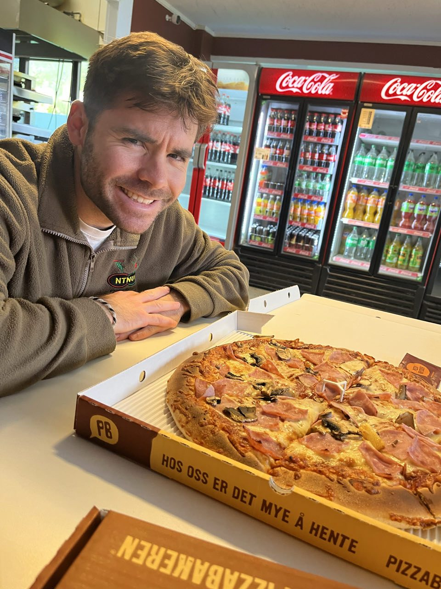
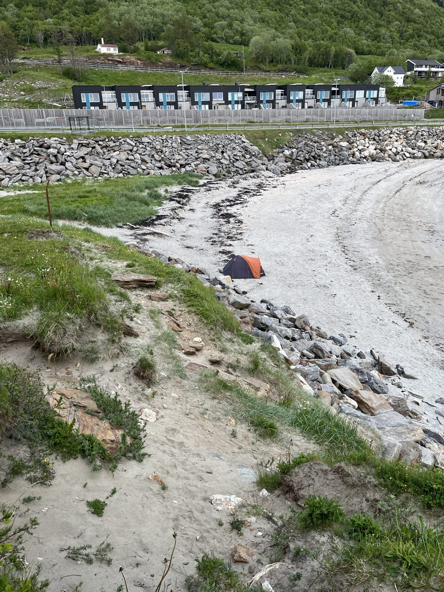
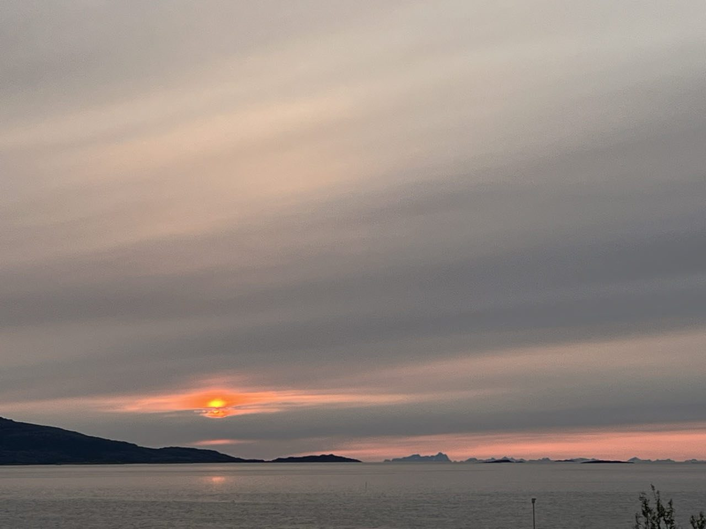

Étape 1 · Nature
Bodø, et premier bivouac sous le soleil de minuit
Départ d'Orléans pour Paris en voiture avec Cam en copilote, sous une chaleur énorme et des embouteillages sans nom. Vol pour Bodø en passant par Oslo sans souci, où je retrouve Julien et Tanguy ! Quelques courses et une pizza qui me retourne le ventre pour une super soirée — on monte la tente sur une plage repérée à l'avance, ici on peut bivouaquer presque partout.
Petite rando vers 23h pour aller observer le soleil de minuit, c'est assez perturbant ! J'écris ces lignes depuis la tente qui tient pas très bien entre le vent et les sardines dans le sable, mais le réveil est dans 4h pour prendre un ferry.


